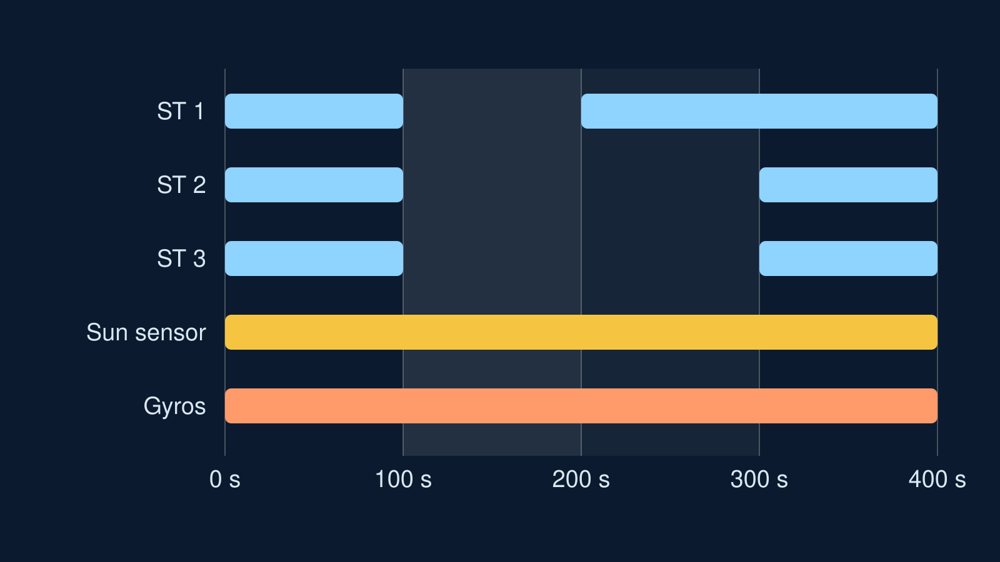
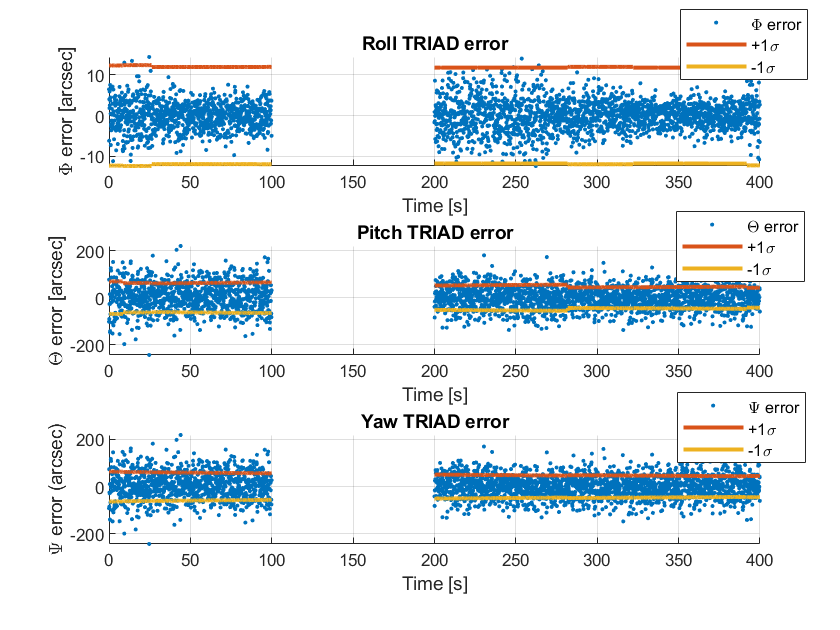
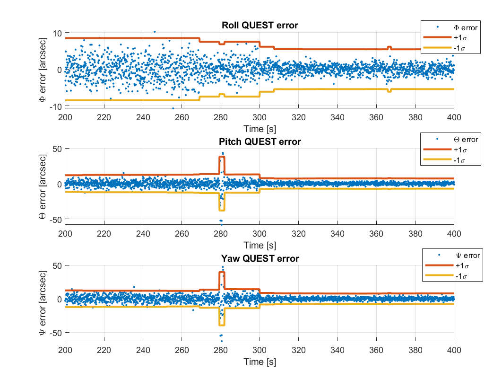
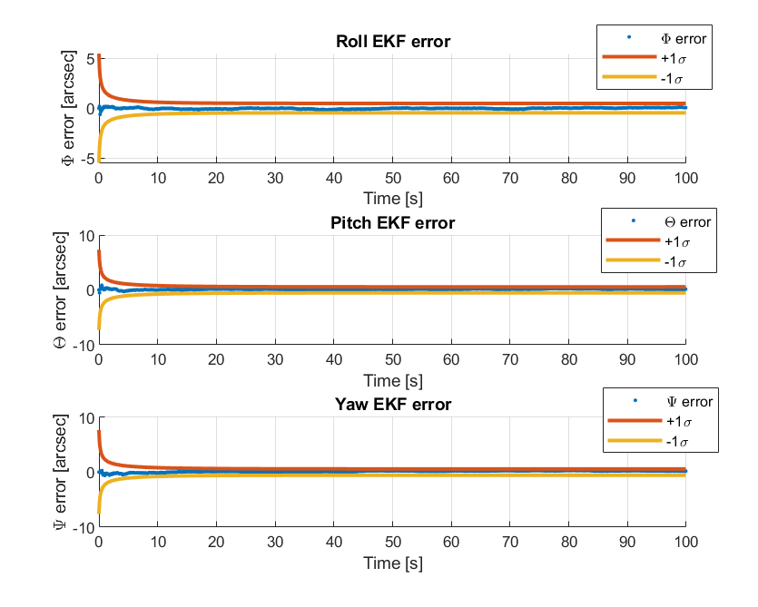
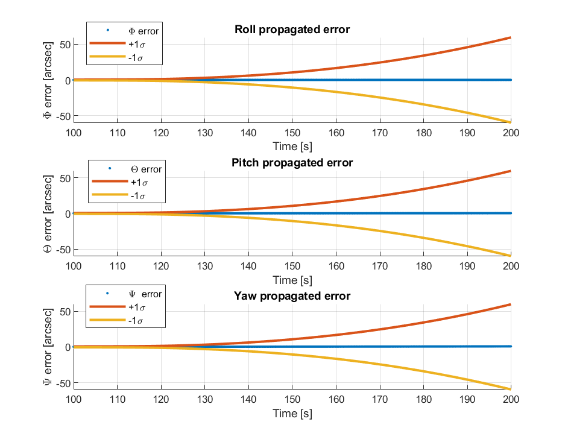
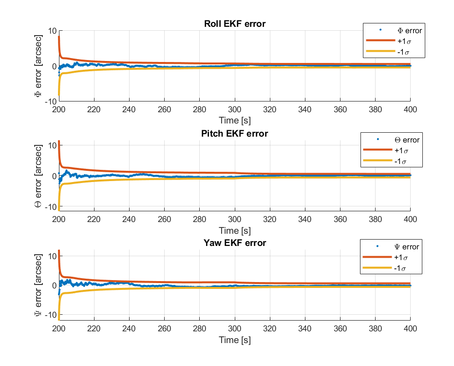
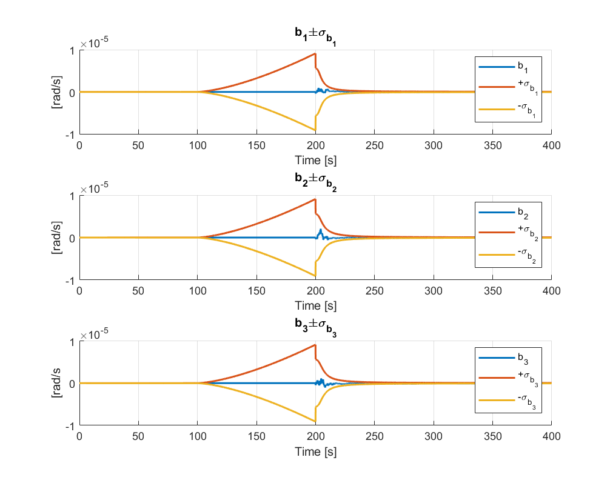

Back to ProjectsTorna a Progetti
Attitude determination of BepiColombo MPODeterminazione d'assetto di BepiColombo MPO
Homework 2, Space Missions and Systems, Sapienza University of Rome, 2019/2020
Homework 2, Space Missions and Systems, Sapienza Università di Roma, 2019/2020
The Mercury Planetary Orbiter of ESA and JAXA's BepiColombo mission keeps its instruments pointed at Mercury. From simulated data of its star trackers, Sun sensor and gyroscopes I estimated its attitude over 400 s, during which the star trackers fail and come back one at a time. I wrote three algorithms in MATLAB, TRIAD, QUEST and a multiplicative extended Kalman filter, without toolbox functions, and compared their errors and uncertainties.
Il Mercury Planetary Orbiter della missione BepiColombo di ESA e JAXA tiene i suoi strumenti puntati verso Mercurio. Da dati simulati dei suoi star tracker, del sensore solare e dei giroscopi ho stimato il suo assetto in 400 s, durante i quali gli star tracker si guastano e tornano attivi uno alla volta. Ho scritto tre algoritmi in MATLAB, TRIAD, QUEST e un filtro di Kalman esteso moltiplicativo, senza funzioni dei toolbox, e ne ho confrontato errori e incertezze.
- 3algorithms comparedalgoritmi confrontati
- 100 swith no star trackersenza star tracker
- < 1″Kalman filter uncertaintyincertezza del filtro di Kalman
- 60″uncertainty after 100 s on gyros aloneincertezza dopo 100 s con i soli giroscopi
The problemIl problema
The probe flies a polar 480 by 1500 km orbit around Mercury, pointing at the planet. Each of its three star trackers measures the direction of three stars, the Sun sensor measures the direction of the Sun and the gyroscopes measure the angular rate, with noise and a slowly drifting bias. The data cover 400 s in four phases: all sensors in the first 100 s, then a star tracker failure that leaves only the Sun sensor and the gyroscopes, then the first star tracker back at 200 s and the other two at 300 s.
La sonda percorre un'orbita polare di 480 per 1500 km intorno a Mercurio, puntata verso il pianeta. Ciascuno dei tre star tracker misura la direzione di tre stelle, il sensore solare misura la direzione del Sole e i giroscopi misurano la velocità angolare, con rumore e un bias che varia lentamente. I dati coprono 400 s in quattro fasi: tutti i sensori nei primi 100 s, poi un guasto degli star tracker che lascia solo il sensore solare e i giroscopi, poi il primo star tracker di nuovo attivo a 200 s e gli altri due a 300 s.

TRIAD and QUESTTRIAD e QUEST
Both methods find the attitude from the directions measured at a single instant, compared with the same directions known in the inertial frame. TRIAD builds two orthogonal triads from exactly two directions; I ran it with a star and the Sun, and with two stars, always from the first star tracker, the only one back at 200 s. QUEST solves Wahba's problem with all the measurements at once, weighted by their accuracy: I found the largest eigenvalue with Newton-Raphson instead of a library eigensolver. For each method I converted the quaternion error into roll, pitch and yaw errors and computed their covariance.
Entrambi i metodi ricavano l'assetto dalle direzioni misurate in un singolo istante, confrontate con le stesse direzioni note nel riferimento inerziale. TRIAD costruisce due terne ortogonali a partire da esattamente due direzioni; l'ho applicato con una stella e il Sole, e con due stelle, sempre dal primo star tracker, l'unico di nuovo attivo a 200 s. QUEST risolve il problema di Wahba con tutte le misure insieme, pesate per la loro accuratezza: ho trovato l'autovalore massimo con Newton-Raphson invece di una funzione di libreria. Per ogni metodo ho convertito l'errore sul quaternione in errori di rollio, beccheggio e imbardata e ne ho calcolato la covarianza.
Neither works between 100 and 200 s, when the only direction measured is the Sun. QUEST is several times more accurate than TRIAD, and its uncertainty follows the number of stars available: larger with the first star tracker alone, smaller again from 300 s.
Nessuno dei due funziona tra 100 e 200 s, quando l'unica direzione misurata è quella del Sole. QUEST è molte volte più accurato di TRIAD, e la sua incertezza segue il numero di stelle disponibili: più grande con il solo primo star tracker, di nuovo più piccola da 300 s.


Multiplicative extended Kalman filterFiltro di Kalman esteso moltiplicativo
The Kalman filter estimates the quaternion and the three gyro biases. It starts from the first QUEST solution, propagates the attitude with the gyro rates through the quaternion kinematics, and corrects it with each new QUEST measurement. Unlike TRIAD and QUEST, it carries the memory of all past measurements: within about 10 s its uncertainty falls below one arcsecond on all three axes.
Il filtro di Kalman stima il quaternione e i tre bias dei giroscopi. Parte dalla prima soluzione di QUEST, propaga l'assetto con le velocità dei giroscopi attraverso la cinematica dei quaternioni, e lo corregge con ogni nuova misura di QUEST. A differenza di TRIAD e QUEST, conserva la memoria di tutte le misure passate: in circa 10 s la sua incertezza scende sotto un secondo d'arco su tutti e tre gli assi.

Through the star tracker failureAttraverso il guasto degli star tracker
Between 100 and 200 s there is no attitude measurement to correct the filter, so I propagated the quaternion and the covariance with the gyroscopes alone, keeping the bias at its last estimate. The process noise grows with the time since the last bias correction, so the uncertainty rises steadily, to about 60 arcseconds after 100 s. At 200 s the filter restarts from the propagated state and converges again, and the bias uncertainty, which had grown in the same way, collapses within a few tens of seconds.
Tra 100 e 200 s non c'è alcuna misura d'assetto per correggere il filtro, quindi ho propagato quaternione e covarianza con i soli giroscopi, tenendo il bias all'ultimo valore stimato. Il rumore di processo cresce con il tempo trascorso dall'ultima correzione del bias, quindi l'incertezza sale costantemente, fino a circa 60 secondi d'arco dopo 100 s. A 200 s il filtro riparte dallo stato propagato e converge di nuovo, e l'incertezza sul bias, cresciuta allo stesso modo, crolla in poche decine di secondi.



ComparisonConfronto
The three algorithms agree on the attitude, but not on how well they know it. TRIAD, limited to two directions at a time, has errors of tens of arcseconds; QUEST, using every star with its own weight, gets down to a few arcseconds; the Kalman filter, which also uses the gyroscopes and the history of the measurements, stays below one arcsecond and is the only one that keeps an estimate through the failure. In all three, pitch and yaw are less accurate than roll.
I tre algoritmi concordano sull'assetto, ma non su quanto bene lo conoscono. TRIAD, limitato a due direzioni alla volta, ha errori di decine di secondi d'arco; QUEST, usando ogni stella con il suo peso, scende a pochi secondi d'arco; il filtro di Kalman, che usa anche i giroscopi e la storia delle misure, resta sotto un secondo d'arco ed è l'unico che mantiene una stima durante il guasto. In tutti e tre, beccheggio e imbardata sono meno accurati del rollio.